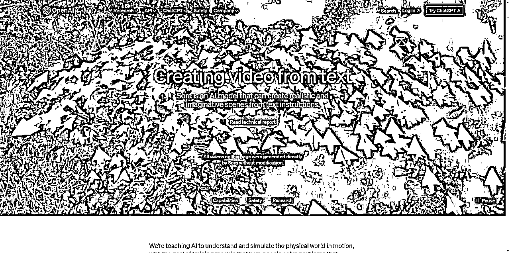
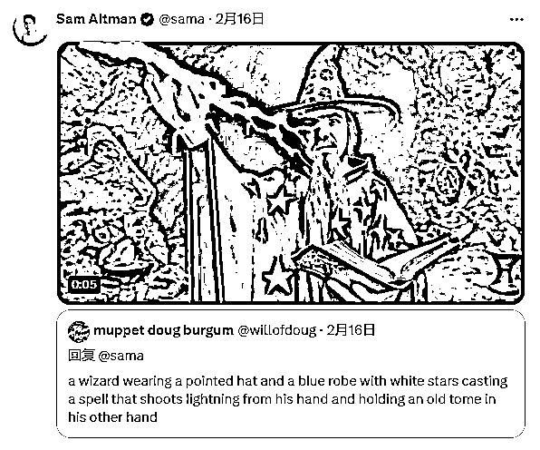
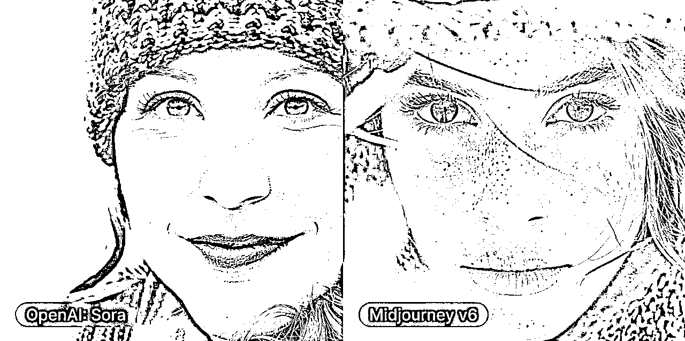
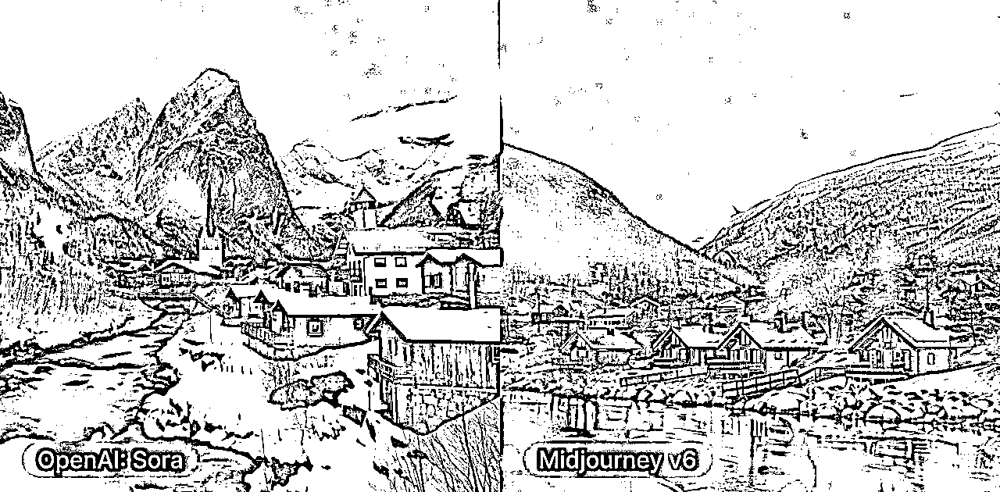
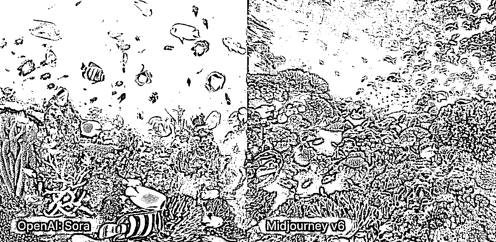
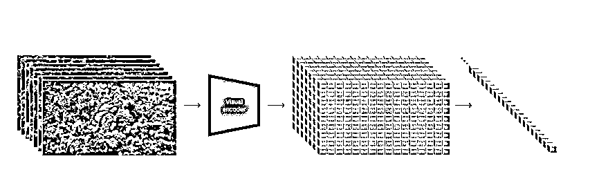
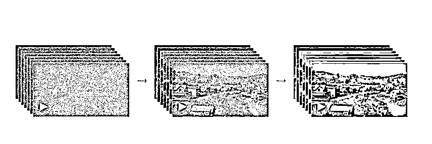
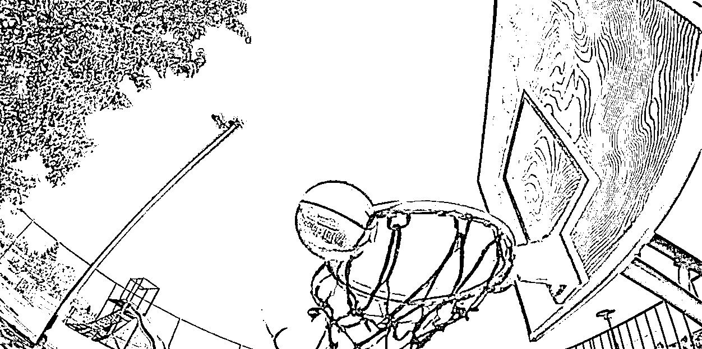

来源：https://eazcupukmno.feishu.cn/docx/Wo28drutxorzCrxPeTccuUB1nce
幻视AI总结
众多研究已经探讨了如何利用各式方法来对视频数据进行生成式建模，涉及技术包括循环神经网络、生成式对抗网络，以及采用自回归机制的Transformer和扩散模型。这些研究大多专注于特定的视觉数据类型，处理的视频长度较短，或者限制在一个固定的尺寸范围内。相较之下，Sora模型呈现出更为通用的视觉数据处理能力，它不仅可生成多样的时长、宽高比和分辨率的视频和图像，而且能够实现长达一分钟的高清视频生成。
在 2024 年 2 月 15 日凌晨，OpenAI 宣布了一项突破性成就：推出名为 Sora 的先进视频生成大型模型。这一技术的推出标志着人工智能视频创作领域的一次重大革命，预计其影响将持续千年。Sora 展示了其对用户文本描述的精确理解和转化能力，能够创建出长达 60 秒的视频，这些视频不仅在视觉上高度逼真，还拥有复杂的场景构建、多角度拍摄技术，以及表情丰富的角色设计。
Sora 的核心技术突破包括对细节的精细捕捉、镜头角度的多样化处理，以及角色情感的深层次表达，确保每个视频都富有故事性和视觉震撼力。无论是描绘时尚前卫的女性在充满霓虹灯光的东京街头漫步，构建雄伟的雪地巨型长毛象场景，还是制作充满想象力的太空探险电影预告片，Sora 都能以前所未有的精度和创造力完成。
这一技术的三大创新特点包括“超长视频生成”能力，即在单个输出中创作出长达 60 秒的连贯视频内容；“多角度镜头切换”，通过这一特性，视频能够展现出场景的不同视角，增加了视觉的丰富性和动态感；以及“世界模型”的优化，这一进步使得 Sora 能够更加准确地理解和重现复杂的世界场景和情境。总之，Sora 的推出不仅是技术上的一次飞跃，也预示着 AI 在视频制作和内容创新方面的未来方向。
Sora 是一种扩散模型，它从看起来像静态噪声的视频开始生成视频，然后通过多个步骤消除噪声来逐渐对其进行转换。Sora 能够一次生成整个视频或扩展生成的视频以使其更长。通过一次为模型提供多帧的预测，我们解决了一个具有挑战性的问题，即确保主题即使暂时离开视野也保持不变。
与 GPT 模型类似，Sora 使用变压器架构，释放出卓越的扩展性能。
我们将视频和图像表示为称为补丁的较小数据单元的集合，每个补丁类似于 GPT 中的令牌。通过统一我们表示数据的方式，我们可以在比以前更广泛的视觉数据上训练扩散变换器，涵盖不同的持续时间、分辨率和纵横比。
Sora 建立在过去对 DALL·E 和 GPT 模型的研究之上。它使用 DALL·E 3 的重述技术，该技术涉及为视觉训练数据生成高度描述性的标题。因此，该模型能够更忠实地遵循生成视频中用户的文本指令。
除了能够仅根据文本指令生成视频之外，该模型还能够获取现有的静态图像并从中生成视频，准确地动画图像的内容并关注小细节。该模型还可以获取现有视频并对其进行扩展或填充缺失的帧。
Sora 是能够理解和模拟现实世界的模型的基础，我们相信这一功能将成为实现 AGI 的重要里程碑。
https://openai.com/sora

目前 Sora 暂无内测资格
当有内测资格获取渠道的时候会实时更新
当然你也可以去X找Sam在线留言
他现在正在在线接单生成~哈哈哈
一切随缘,希望各位好运

Sora 本身也可以文生图片但是由于效果暂时未达到遥遥领先的状态
就进行展示只展示视频案例～
部分视频未在官网展示属于 Sam 在 X 上在线接单视频～哈哈哈
下面进行展示并附带对应中文的 prompt
A instructional cooking session for homemade gnocchi hosted by agrandmother social media influencer set in a rustic Tuscan countrykitchen with cinematic lighting
中文提示词（翻译由百度直译）
由agrandmother社交媒体网红主持的自制意大利面团烹饪教学会议，背景设在托斯卡纳乡村厨房，配有电影般的灯光
Two golden retrievers podcasting on top of a mountain
中文提示词（翻译由百度直译）
两只金毛寻回犬在山顶上播客
Prompt:
A cat waking up its sleeping owner demanding breakfast. The owner tries to ignore the cat, but the cat tries new tactics and finally the owner pulls out a secret stash of treats from under the pillow to hold the cat off a little longer.
中文提示词（翻译由百度直译）
一只猫叫醒熟睡的主人，要求吃早饭。主人试图忽略这只猫，但猫尝试了新的策略，最终主人从枕头下拿出了一堆秘密的零食，让猫多呆一会儿。
Prompt:
The camera follows behind a white vintage SUV with a black roof rack as it speeds up a steep dirt road surrounded by pine trees on a steep mountain slope, dust kicks up from it’s tires, the sunlight shines on the SUV as it speeds along the dirt road, casting a warm glow over the scene. The dirt road curves gently into the distance, with no other cars or vehicles in sight. The trees on either side of the road are redwoods, with patches of greenery scattered throughout. The car is seen from the rear following the curve with ease, making it seem as if it is on a rugged drive through the rugged terrain. The dirt road itself is surrounded by steep hills and mountains, with a clear blue sky above with wispy clouds.
中文提示词（翻译由百度直译）
镜头跟随在一辆带黑色车顶行李架的白色复古SUV后面，它在陡峭的山坡上加速行驶在一条被松树包围的陡峭土路上，轮胎上的灰尘飞溅，阳光照射在SUV上，在土路上加速行驶，给现场投下温暖的光芒。土路缓缓向远处弯曲，看不到其他汽车或车辆。路两边的树都是红木，到处都是成片的绿色植物。从后面可以看到这辆车轻松地沿着弯道行驶，看起来就像是在崎岖的地形上行驶。土路本身被陡峭的山丘和山脉包围，上面是晴朗的蓝天和稀疏的云层。
prompt:
An extreme close-up of an gray-haired man with a beard in his 60s, he is deep in thought pondering the history of the universe as he sits at a cafe in Paris, his eyes focus on people offscreen as they walk as he sits mostly motionless, he is dressed in a wool coat suit coat with a button-down shirt , he wears a brown beret and glasses and has a very professorial appearance, and the end he offers a subtle closed-mouth smile as if he found the answer to the mystery of life, the lighting is very cinematic with the golden light and the Parisian streets and city in the background, depth of field, cinematic 35mm film.
中文提示词:
这是一个60多岁留着胡子的白发男子的特写镜头，他坐在巴黎的一家咖啡馆里，沉思着宇宙的历史，当人们走着的时候，他的眼睛聚焦在屏幕外的人身上，他几乎一动不动地坐着，他穿着羊毛外套西装外套和纽扣衬衫，戴着棕色贝雷帽和眼镜，最后，他微微一笑，仿佛找到了生命之谜的答案，灯光非常像电影，背景是金色的灯光和巴黎的街道和城市，景深，35毫米电影胶片。
Prompt:
A litter of golden retriever puppies playing in the snow. Their heads pop out of the snow, covered in.
中文提示词:
一窝金毛寻回犬在雪地里玩耍。他们的头从雪中冒了出来，被雪覆盖着。
prompt:
An adorable happy otter confidently stands on a surfboard wearing a yellow lifejacket, riding along turquoise tropical waters near lush tropical islands, 3D digital render art style.
中文提示词:
一只可爱快乐的水獭穿着黄色救生衣，自信地站在冲浪板上，沿着郁郁葱葱的热带岛屿附近的绿松石热带水域骑行，3D数字渲染艺术风格。
Prompt:
Monster Illustration in flat design style of a diverse family of monsters. The group includes a furry brown monster, a sleek black monster with antennas, a spotted green monster, and a tiny polka-dotted monster, all interacting in a playful environment.
中文提示词：
怪物插图采用平面设计风格，描绘了各种各样的怪物家族。这群人包括一只毛茸茸的棕色怪物、一只带天线的光滑黑色怪物、一个斑点绿色怪物和一个小圆点怪物，所有这些都在一个有趣的环境中互动。
此案例图生视频案例
但是重点是他能创建出这张图片之前的演变形式动画也就是前序动画
目前pika和runway是不能创建前序动画只能创建后序动画
就是根据图片生成后续内容这也是Sora最夸张的地方之一
Svd(stable video diffusion)可以创建前序动画但是操作略微复杂操作难度不亚于学会一个专业化工具

Prompt:
An image of a realistic cloud that spells “SORA”.
中文提示词:
一个逼真的云的图像，拼写为“SORA”。
因此我们可以使用此方法向前和向后扩展视频以产生无缝的无限循环。
扩散模型启用了多种根据文本提示编辑图像和视频的方法。
应用其中一种方法，SDEdit，32到索拉。这项技术使 Sora 能够零镜头地改变输入视频的风格和环境。
prompt：
change the setting to be in a lush jungle
中文提示词:
将环境更改为郁郁葱葱的丛林
prompt:
change the setting to the 1920s with an old school car. make sure to keep the red color
中文提示词:
用一辆老式校车将背景改为20世纪20年代。一定要保持红色
Prompt:
recreate in the style of a charcoal drawing, making sure to be black and white
中文提示词:
以木炭画的风格重新创作，确保是黑白的
prompt:
change the setting to be cyberpunk
中文提示词:
把背景改成赛博朋克
没什么好夸的比Dall-e3要优秀但是对比专门的图像模型逊色
3张对比图



受到训练于互联网规模数据集上的大型语言模型（LLM）所展现出的通用能力的启发，研究专家们已经观察到LLM范式在将文本、代码、数学以及多样化的自然语言等不同类型令牌整合方面的优雅成效。本研究探讨了如何将这种范例应用于生成视觉数据的模型，使其获得类似的益处。在LLMs中使用文本令牌的同时，Sora模型则采用了视觉补丁。研究结果显示，这些视觉补丁是对模型视觉数据进行表达的一种高效手段，他们在用于训练处理多种视频和图像的生成模型时证明了其可扩展性和有效性。

在较高层面上，研究人员通过首先将视频压缩到低维潜空间，然后将表示分解为时空补丁来将视频转换为补丁。
科研团队开发了一种网络模型，专门用于减少视觉数据的维度复杂性。该模型将未处理的视频数据作为输入，并产生一个经过时间和空间维度压缩的潜在表示。随后，Sora在这个简化的潜在空间中接受训练，以生成视频内容。此外，研究人员设计了一个配套的解码器，其功能是把潜在空间中的表示转化回原始的像素级视频输出。
研究团队从压缩视频中提取了一组时空补丁，作为Transformer模型的输入令牌。该方法同样适用于图像处理，理由是图像可以被视为只包含单一帧的视频。借助基于这些补丁的表示，研究团队的模型Sora得以处理不同分辨率、时长和长宽比的图像和视频资料。在模型执行推理任务时，研究人员能够通过以随机初始化的补丁排列成指定大小的网格，来精确控制生成的视频尺寸。
Sora采用了扩散转换器(diffusion transformer)的模型架构，旨在从噪声数据中恢复出未受干扰的原始补丁，同时可结合条件信息如文本提示进行训练。转换器技术(Transformer)在多个领域，包括语言模型、计算机视觉和图像生成方面，已证明其卓越的扩展能力。

过去的图像和视频生成方法通常会将视频调整大小、裁剪或修剪为标准尺寸，例如，分辨率为 256x256 的 4 秒视频。我们发现，对原始大小的数据进行训练有几个好处。
普通计算
4倍计算
32倍计算
Sora 可以采样宽屏 1920x1080p 视频、垂直 1080x1920 视频以及介于两者之间的所有视频。这使得 Sora 可以直接以其原生宽高比为不同设备创建内容。它还使我们能够在以全分辨率生成之前快速以较低尺寸制作原型内容 - 所有这些都使用相同的模型。
我们根据经验发现，以原始长宽比对视频进行训练可以改善构图和取景。我们将 Sora 与将所有训练视频裁剪为正方形的模型版本进行比较，这是训练生成模型时的常见做法。在方形作物（左）上训练的模型有时会生成仅部分可见主体的视频。相比之下，Sora（右）的视频的取景效果有所改善。
训练文本到视频生成系统需要大量带有相应文本字幕的视频。我们应用了 DALL·E 3 中引入的重新字幕技术30到视频。我们首先训练一个高度描述性的字幕生成器模型，然后使用它为训练集中的所有视频生成文本字幕。我们发现，对高度描述性视频字幕进行训练可以提高文本保真度以及视频的整体质量。
与 DALL·E 3 类似，利用 GPT 将简短的用户提示转换为较长的详细字幕，然后发送到视频模型。这使得 Sora 能够生成准确遵循用户提示的高质量视频。
我们来看一下这个案例

其中这个镜头篮球模型穿模了
Sora在准确模拟复杂环境中的物理现象方面存在局限性，特别是在理解与处理因果逻辑时。以篮球通过篮筐后发生爆炸的场景为例，Sora可能无法正确处理此类物理动作。此外，Sora在捕捉空间细节以及精确刻画时间序列方面，也可能表现出不足。
直接用一个案例进行演示
Prompt:
The Glenfinnan Viaduct is a historic railway bridge in Scotland, UK, that crosses over the west highland line between the towns of Mallaig and Fort William. It is a stunning sight as a steam train leaves the bridge, traveling over the arch-covered viaduct. The landscape is dotted with lush greenery and rocky mountains, creating a picturesque backdrop for the train journey. The sky is blue and the sun is shining, making for a beautiful day to explore this majestic spot.
中文提示词:
格伦芬南高架桥是英国苏格兰的一座历史悠久的铁路桥，横跨马莱格镇和威廉堡镇之间的西高地线。当一列蒸汽火车离开大桥，在拱形高架桥上行驶时，这是一个令人惊叹的景象。风景中点缀着郁郁葱葱的绿色植物和岩石山脉，为火车之旅创造了风景如画的背景。天空湛蓝，阳光灿烂，这是探索这一雄伟景点的美好一天。
主体:格伦芬南高架桥是英国苏格兰的一座历史悠久的铁路桥，
主体细节: 横跨马莱格镇和威廉堡镇之间的西高地线.
主体状态: 当一列蒸汽火车离开大桥，在拱形高架桥上行驶时，这是一个令人惊叹的景象
环境背景:风景中点缀着郁郁葱葱的绿色植物和岩石山脉，为火车之旅创造了风景如画的背景。天空湛蓝，阳光灿烂
除此之外还可以加上特殊镜头提示词
镜头景别: 特写,鸟瞰图
镜头要求: 景深、35 毫米电影胶片
写的匆忙先这样后续会持续更新......
在电商平台上的可见度。利用广告、关键词优化以及促销活动可以增加销量和提高品牌知名度。
第一，科技竞争最终比拼的是让人才密度和深厚积累。很多人说 Sora的效果吊打 Pika 和Runway。这很正常，和创业者团队比OpenAI 这种有核心技术的公司实力还是非常强劲的。有人认为有了 AI 以后创业公司只需要做个体户就行，实际今天再次证明这种想法是非常可笑的。
第二，Sora不会立马颠覆所有行业，但它能激发更多人的创作力。今天很多人谈到 Sora 对影视工业的打击，我倒不觉得是这样，因为机器能生产一个好视频，但视频的主题、脚本和分镜头策划、台词的配合，都需要人的创意至少需要人给提示词。一个视频或者电影是由无数个 60 秒组成的。今天 Sora 可能给广告业、电影预告片、短视频行业带来巨大的颠覆，但它不一定那么快击败 TikTok，更可能成为 TikTok的创作工具
第三，我一直说国内大模型发展水平表面看已经接近 GPT-3.5了，但实际上跟 4.0 比还有一年半的差距。而且我相信 OpenAI手里应该还藏着一些秘密武器，无论是 GPT-5，还是机器自我学习自动产生内容，包括 AIGC。奥特曼是个营销大师，知道怎样掌握节奏，他们手里的武器并没有全拿出来。这样看来中国跟美国的 AI 差距可能还在加大。
第四，大语言模型最牛的是，它不是填空机.而是能完整地理解这个世界的知识。这次很多5能输出 60 秒视频，保持多镜头的一致性，模拟自然世界和物理规律，实际这些都比较表象最重要的是 Sora 的技术思路完全不一样。因为这之前我们做视频做图用的都是 Diffusion，你可以把视频看成是多个真实图片的组合，它并没有真正掌握这个世界的知识。现在所有的文生图、文生视频都是在 2D 平面上对图形元素进行操作，并没有适用物理定律。但 Sora 产生的视频里，它能像人一样理解坦克是有巨大冲击力的，坦克能撞毁汽车，而不会出现汽车撞毁坦克这样的情况。所以我理解这次 OpenAl 利用它的大语言模型优势，把 LLM 和 Diffusion 结合起来训练，让 Sora 实现了对现实世界的理解和对世界的模拟两层能力，这样产生的视频才是真实的，才能跳出 2D 的范围模拟真实的物理世界。这都是大模型的功劳.
这也代表未来的方向。有强劲的大模型做底子，基于对人类语言的理解，对人类知识和世界模型的了解，再叠加很多其他的技术，就可以创造冬个须域的超级工目比如生物医当蛋白质和基因研究，包括物理、化学、数学的学科研究上，大模型都会发挥作用。这次 Sora对物理世界的模拟，至少将会对机器人具身智能和自动驾驶带来巨大的影响。原来的自动驾驶技术过度强调感知层面，而没有工作在认知层面。其实人在驾驶汽车的时候，很多判断是基于对这个世界的理解。
周鸿祎
Sora对于所有人包括我们都是同一起跑线我们没有任何优势多的只是一份探索的心
我们希望更多人与我们一同共建